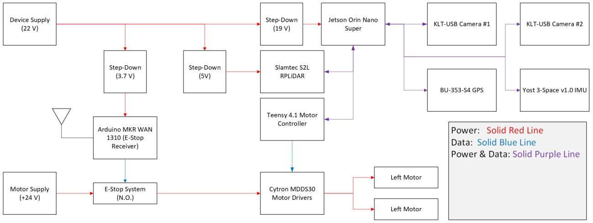

Senior Capstone
Pathfinding Autonomous Vehicle
PAVBOT was our autonomous vehicle capstone project developed for autonomous navigation competitions. My primary responsibility was the electrical architecture, including power distribution, motor control integration, emergency-stop systems, hardware validation, and subsystem bring-up for reliable vehicle operation.
My work
The electrical side of the robot.
I designed and integrated the electrical subsystems supporting vehicle mobility and control, including battery power distribution, motor-driver interfaces, emergency-stop circuitry, and communication paths between the Jetson compute platform, Teensy controller, and drive hardware.
MATLAB and Simulink were used to evaluate power-system behavior, motor-drive requirements, and subsystem interactions before implementation. These analyses were then validated against the physical platform through electrical testing, startup verification, and troubleshooting during system integration.
A significant portion of the project involved documenting electrical architecture, wiring, safety systems, and troubleshooting procedures to support future development, maintenance, and competition readiness
Photos
Build and electrical context.


Electrical details
The pieces I documented for handoff.
